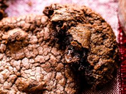

Brownie Cookies

Description
What is better than a brownie? A brownie cookie,
of course! Follow this recipe and you'll never
go back to making normal brownies!
Ingredients
For The Cookie:
- ½ cup butter, softened
- ½ cup light brown sugar
- ¼ cup white sugar
- ½ teaspoon vanilla extract
- 1 large egg
- 1¼ cups all-purpose flour
- ½ teaspoon salt
- ½ teaspoon baking soda
- 1 cup semisweet chocolate chips
For The Brownie:
- 1 cup white sugar
- ½ cup butter, melted
- 1 teaspoon vanilla extract
- 2 eggs
- ⅓ cup cocoa powder
- ½ cup all-purpose flour
- ¼ teaspoon baking powder
- ⅛ teaspoon salt
Steps
- Preheat oven to 350 degrees F (175 degrees C).
Grease a 9x13-inch baking dish.
- Beat softened butter, light brown sugar,
1/4 cup white sugar, and 1/2 teaspoon
vanilla extract together in a large bowl
until creamy. Add 1 egg; beat until light
and creamy, about 2 minutes.
- Whisk 1 1/4 cups flour, 1/2 teaspoon salt, and
baking soda together in a bowl. Gradually stir
flour mixture into butter mixture until dough is
combined. Stir chocolate chips into dough. Spread
dough into the bottom of the prepared baking dish
to cover completely.
- Stir 1 cup white sugar, melted butter, and 1
teaspoon vanilla extract together in a bowl;
add 2 eggs and beat well. Mix cocoa powder into
butter mixture until well-combined. Stir 1/2 cup
flour, baking powder, and 1/8 teaspoon salt into
cocoa mixture until batter is combined. Pour
brownie batter over cookie dough and spread to
cover completely.
- Bake in the preheated oven until a toothpick inserted
into the center of the brookies comes out clean, 20
to 25 minutes. Cool completely before cutting into bars.
To go back, click here